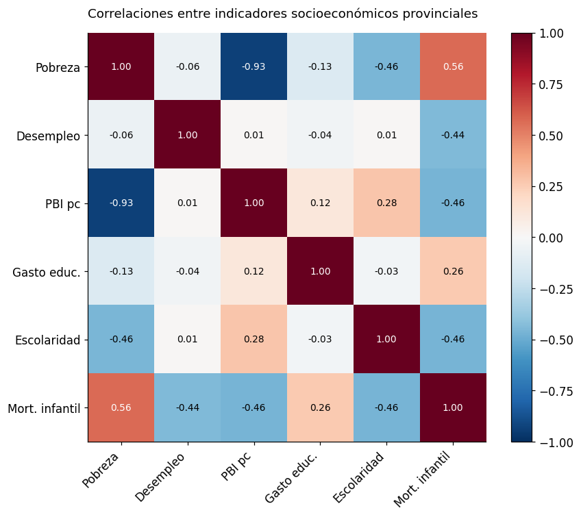
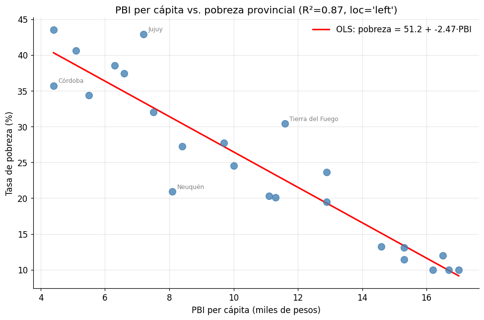

Clase 8 — Estadística aplicada con Python#
Python y Políticas Públicas
Contenidos#
Estadística descriptiva con pandas y scipy
Correlaciones e interpretación
Regresión lineal simple con statsmodels (OLS)
Regresión lineal múltiple
Tablas de resultados para un policy brief
Ejercicios
import pandas as pd
import numpy as np
import matplotlib.pyplot as plt
import scipy.stats as stats
import statsmodels.api as sm
import statsmodels.formula.api as smf
%matplotlib inline
pd.set_option('display.float_format', '{:.4f}'.format)
# Dataset provincial (mismo que clases anteriores, expandido)
np.random.seed(42)
n = 24
provincias = [
"CABA", "Buenos Aires", "Córdoba", "Santa Fe", "Mendoza",
"Tucumán", "Salta", "Entre Ríos", "Chaco", "Misiones",
"Corrientes", "Santiago del Estero", "Jujuy", "Río Negro", "Neuquén",
"Formosa", "San Juan", "San Luis", "Catamarca", "La Rioja",
"La Pampa", "Chubut", "Santa Cruz", "Tierra del Fuego"
]
gasto_educ = np.random.uniform(12, 28, n)
gasto_salud = np.random.uniform(8, 20, n)
df = pd.DataFrame({
'provincia': provincias,
'pobreza': np.random.uniform(15, 58, n).round(1),
'desempleo': np.random.uniform(3, 15, n).round(1),
'pbi_pc': np.random.uniform(4, 18, n).round(1),
'gasto_educacion': gasto_educ.round(1),
'gasto_salud': gasto_salud.round(1),
'anios_escolaridad': np.random.uniform(7, 13, n).round(1),
'mortalidad_infantil': np.random.uniform(5, 25, n).round(1),
'cobertura_agua': np.random.uniform(65, 99, n).round(1),
})
# Introducir correlaciones realistas
df['pobreza'] = (65 - df['pbi_pc'] * 2.5 - df['anios_escolaridad'] * 1.5
+ np.random.normal(0, 4, n)).clip(10, 65).round(1)
df['mortalidad_infantil'] = (30 - df['cobertura_agua'] * 0.2 + df['pobreza'] * 0.2
+ np.random.normal(0, 2, n)).clip(3, 30).round(1)
print(f"Dataset: {df.shape}")
df.head()
Dataset: (24, 9)
| provincia | pobreza | desempleo | pbi_pc | gasto_educacion | gasto_salud | anios_escolaridad | mortalidad_infantil | cobertura_agua | |
|---|---|---|---|---|---|---|---|---|---|
| 0 | CABA | 20.1000 | 3.1000 | 11.3000 | 18.0000 | 13.5000 | 11.8000 | 20.2000 | 66.4000 |
| 1 | Buenos Aires | 24.5000 | 12.8000 | 10.0000 | 27.2000 | 17.4000 | 12.4000 | 16.4000 | 85.1000 |
| 2 | Córdoba | 35.7000 | 11.5000 | 4.4000 | 23.7000 | 10.4000 | 8.9000 | 17.8000 | 88.0000 |
| 3 | Santa Fe | 34.4000 | 11.7000 | 5.5000 | 21.6000 | 14.2000 | 7.7000 | 22.1000 | 65.6000 |
| 4 | Mendoza | 43.5000 | 12.3000 | 4.4000 | 14.5000 | 15.1000 | 8.4000 | 22.1000 | 82.4000 |
import matplotlib as mpl
import matplotlib.pyplot as plt
# --- Paleta de identidad del curso ---
C = ['#2A6496', '#E07B3F', '#3D9970', '#8E5EA2', '#C0A830', '#637A8A']
mpl.rcParams.update({
'figure.figsize' : (10, 5),
'font.size' : 11,
'axes.titlesize' : 12,
'axes.titleweight' : 'normal',
'axes.spines.top' : False,
'axes.spines.right' : False,
'legend.frameon' : False,
'axes.prop_cycle' : mpl.cycler(color=C),
'figure.dpi' : 110,
})
def tit(ax, t, **kw):
"""Título sin negrita, alineado a la izquierda."""
ax.set_title(t, loc='left', fontweight='normal', **kw)
1. Estadística descriptiva#
Antes de cualquier modelo, siempre hay que conocer bien los datos.
# Estadísticas descriptivas completas
desc = df.select_dtypes(include='number').describe().T
desc['cv'] = (desc['std'] / desc['mean'] * 100).round(1) # coeficiente de variación
desc.round(2)
| count | mean | std | min | 25% | 50% | 75% | max | cv | |
|---|---|---|---|---|---|---|---|---|---|
| pobreza | 24.0000 | 24.9500 | 11.3100 | 10.0000 | 13.1800 | 24.0500 | 34.7200 | 43.5000 | 45.3000 |
| desempleo | 24.0000 | 9.1300 | 3.4000 | 3.1000 | 6.8500 | 10.1000 | 11.8800 | 13.6000 | 37.3000 |
| pbi_pc | 24.0000 | 10.6100 | 4.2600 | 4.4000 | 7.0500 | 10.5500 | 14.7800 | 17.0000 | 40.2000 |
| gasto_educacion | 24.0000 | 19.0400 | 4.6600 | 12.3000 | 14.9000 | 17.9500 | 22.1800 | 27.5000 | 24.5000 |
| gasto_salud | 24.0000 | 13.5000 | 3.5800 | 8.4000 | 10.3000 | 13.7000 | 16.0500 | 19.6000 | 26.5000 |
| anios_escolaridad | 24.0000 | 9.9800 | 1.8100 | 7.0000 | 8.7300 | 9.5500 | 11.8200 | 12.8000 | 18.1000 |
| mortalidad_infantil | 24.0000 | 18.8400 | 3.3300 | 12.8000 | 16.5500 | 18.6500 | 21.6500 | 24.5000 | 17.7000 |
| cobertura_agua | 24.0000 | 81.0700 | 10.3000 | 65.6000 | 72.2500 | 82.7000 | 88.1200 | 96.8000 | 12.7000 |
# Percentiles adicionales
for var in ['pobreza', 'pbi_pc', 'mortalidad_infantil']:
q = df[var].quantile([0.1, 0.25, 0.5, 0.75, 0.9])
print(f"{var}: p10={q[0.1]:.1f}, p25={q[0.25]:.1f}, mediana={q[0.5]:.1f}, p75={q[0.75]:.1f}, p90={q[0.9]:.1f}")
pobreza: p10=10.4, p25=13.2, mediana=24.1, p75=34.7, p90=40.0
pbi_pc: p10=5.2, p25=7.0, mediana=10.6, p75=14.8, p90=16.4
mortalidad_infantil: p10=14.5, p25=16.6, mediana=18.6, p75=21.6, p90=23.4
# Tests estadísticos básicos con scipy
# Test de normalidad (Shapiro-Wilk)
for var in ['pobreza', 'pbi_pc']:
stat, p = stats.shapiro(df[var])
interpretacion = "no rechaza normalidad" if p > 0.05 else "rechaza normalidad"
print(f"Shapiro-Wilk ({var}): W={stat:.3f}, p={p:.3f} → {interpretacion}")
Shapiro-Wilk (pobreza): W=0.926, p=0.081 → no rechaza normalidad
Shapiro-Wilk (pbi_pc): W=0.928, p=0.087 → no rechaza normalidad
2. Correlaciones e interpretación#
# Matriz de correlación de Pearson
corr_vars = ['pobreza', 'desempleo', 'pbi_pc', 'gasto_educacion', 'anios_escolaridad', 'mortalidad_infantil']
corr = df[corr_vars].corr()
corr.round(3)
| pobreza | desempleo | pbi_pc | gasto_educacion | anios_escolaridad | mortalidad_infantil | |
|---|---|---|---|---|---|---|
| pobreza | 1.0000 | -0.0570 | -0.9320 | -0.1340 | -0.4580 | 0.5630 |
| desempleo | -0.0570 | 1.0000 | 0.0150 | -0.0370 | 0.0120 | -0.4450 |
| pbi_pc | -0.9320 | 0.0150 | 1.0000 | 0.1160 | 0.2750 | -0.4640 |
| gasto_educacion | -0.1340 | -0.0370 | 0.1160 | 1.0000 | -0.0260 | 0.2640 |
| anios_escolaridad | -0.4580 | 0.0120 | 0.2750 | -0.0260 | 1.0000 | -0.4630 |
| mortalidad_infantil | 0.5630 | -0.4450 | -0.4640 | 0.2640 | -0.4630 | 1.0000 |
# Correlación con test de significancia
print(f"{'Variable':<25} {'r':>6} {'p-valor':>10} {'Significativa':>15}")
print("-" * 60)
for var in corr_vars:
if var == 'pobreza':
continue
r, p = stats.pearsonr(df['pobreza'].dropna(), df[var].dropna())
sig = "✓ (p<0.05)" if p < 0.05 else "✗"
print(f"{var:<25} {r:>6.3f} {p:>10.3f} {sig:>15}")
Variable r p-valor Significativa
------------------------------------------------------------
desempleo -0.057 0.791 ✗
pbi_pc -0.932 0.000 ✓ (p<0.05)
gasto_educacion -0.134 0.533 ✗
anios_escolaridad -0.458 0.024 ✓ (p<0.05)
mortalidad_infantil 0.563 0.004 ✓ (p<0.05)
# Heatmap de correlaciones
fig, ax = plt.subplots(figsize=(8, 7))
im = ax.imshow(corr, cmap='RdBu_r', vmin=-1, vmax=1, aspect='auto')
plt.colorbar(im, ax=ax)
etiquetas = ['Pobreza', 'Desempleo', 'PBI pc', 'Gasto educ.', 'Escolaridad', 'Mort. infantil']
ax.set_xticks(range(len(corr_vars)))
ax.set_yticks(range(len(corr_vars)))
ax.set_xticklabels(etiquetas, rotation=45, ha='right')
ax.set_yticklabels(etiquetas)
for i in range(len(corr_vars)):
for j in range(len(corr_vars)):
color = 'white' if abs(corr.values[i, j]) > 0.5 else 'black'
ax.text(j, i, f"{corr.values[i, j]:.2f}", ha='center', va='center', fontsize=9, color=color)
ax.set_title("Correlaciones entre indicadores socioeconómicos provinciales", fontsize=12, pad=15, loc='left')
plt.tight_layout()
plt.show()

3. Regresión lineal simple (OLS)#
La regresión OLS (Mínimos Cuadrados Ordinarios) estima la relación lineal entre una variable dependiente (Y) y una o más variables independientes (X).
Interpretación: el coeficiente β₁ indica cuánto cambia Y en promedio cuando X aumenta en 1 unidad, manteniendo lo demás constante.
# ¿Cómo se relaciona el PBI per cápita con la tasa de pobreza?
modelo_simple = smf.ols('pobreza ~ pbi_pc', data=df).fit()
print(modelo_simple.summary())
OLS Regression Results
==============================================================================
Dep. Variable: pobreza R-squared: 0.869
Model: OLS Adj. R-squared: 0.863
Method: Least Squares F-statistic: 145.7
Date: Tue, 19 May 2026 Prob (F-statistic): 3.56e-11
Time: 14:03:53 Log-Likelihood: -67.383
No. Observations: 24 AIC: 138.8
Df Residuals: 22 BIC: 141.1
Df Model: 1
Covariance Type: nonrobust
==============================================================================
coef std err t P>|t| [0.025 0.975]
------------------------------------------------------------------------------
Intercept 51.1819 2.335 21.917 0.000 46.339 56.025
pbi_pc -2.4724 0.205 -12.069 0.000 -2.897 -2.048
==============================================================================
Omnibus: 2.419 Durbin-Watson: 1.863
Prob(Omnibus): 0.298 Jarque-Bera (JB): 1.018
Skew: 0.120 Prob(JB): 0.601
Kurtosis: 3.980 Cond. No. 31.3
==============================================================================
Notes:
[1] Standard Errors assume that the covariance matrix of the errors is correctly specified.
# Extraer los resultados clave
print("=" * 50)
print("RESULTADOS PRINCIPALES")
print("=" * 50)
print(f"Intercepto (α): {modelo_simple.params['Intercept']:.2f}")
print(f"Coeficiente PBI: {modelo_simple.params['pbi_pc']:.2f}")
print(f" → Por cada 1.000$ más de PBI per cápita, la tasa de pobreza")
print(f" varía en {modelo_simple.params['pbi_pc']:.2f} puntos porcentuales")
print(f"p-valor (PBI): {modelo_simple.pvalues['pbi_pc']:.4f}")
print(f"R² ajustado: {modelo_simple.rsquared_adj:.3f}")
print(f" → El modelo explica el {modelo_simple.rsquared_adj*100:.1f}% de la varianza en pobreza")
==================================================
RESULTADOS PRINCIPALES
==================================================
Intercepto (α): 51.18
Coeficiente PBI: -2.47
→ Por cada 1.000$ más de PBI per cápita, la tasa de pobreza
varía en -2.47 puntos porcentuales
p-valor (PBI): 0.0000
R² ajustado: 0.863
→ El modelo explica el 86.3% de la varianza en pobreza
# Visualizar la regresión
fig, ax = plt.subplots(figsize=(9, 6))
ax.scatter(df['pbi_pc'], df['pobreza'], alpha=0.8, color='steelblue', s=80, zorder=3)
# Línea de regresión
x_range = np.linspace(df['pbi_pc'].min(), df['pbi_pc'].max(), 100)
y_pred = modelo_simple.params['Intercept'] + modelo_simple.params['pbi_pc'] * x_range
ax.plot(x_range, y_pred, color='red', linewidth=2, label=f'OLS: pobreza = {modelo_simple.params["Intercept"]:.1f} + {modelo_simple.params["pbi_pc"]:.2f}·PBI')
# Etiquetar outliers (residuos grandes)
df['residuo'] = modelo_simple.resid
outliers = df[df['residuo'].abs() > df['residuo'].abs().quantile(0.85)]
for _, row in outliers.iterrows():
ax.annotate(row['provincia'], (row['pbi_pc'], row['pobreza']),
textcoords='offset points', xytext=(6, 4), fontsize=8, color='gray')
ax.set_title(f"PBI per cápita vs. pobreza provincial (R²={modelo_simple.rsquared:.2f}, loc='left')",
fontsize=13)
ax.set_xlabel("PBI per cápita (miles de pesos)")
ax.set_ylabel("Tasa de pobreza (%)")
ax.legend(frameon=False)
ax.grid(alpha=0.3)
ax.spines['top'].set_visible(False)
ax.spines['right'].set_visible(False)
plt.tight_layout()
plt.show()

4. Regresión lineal múltiple#
# Modelo con múltiples predictores
modelo_multiple = smf.ols(
'pobreza ~ pbi_pc + anios_escolaridad + gasto_educacion + desempleo',
data=df
).fit()
print(modelo_multiple.summary())
OLS Regression Results
==============================================================================
Dep. Variable: pobreza R-squared: 0.916
Model: OLS Adj. R-squared: 0.898
Method: Least Squares F-statistic: 51.84
Date: Tue, 19 May 2026 Prob (F-statistic): 5.81e-10
Time: 14:03:53 Log-Likelihood: -62.020
No. Observations: 24 AIC: 134.0
Df Residuals: 19 BIC: 139.9
Df Model: 4
Covariance Type: nonrobust
=====================================================================================
coef std err t P>|t| [0.025 0.975]
-------------------------------------------------------------------------------------
Intercept 66.2765 5.686 11.656 0.000 54.376 78.177
pbi_pc -2.2975 0.185 -12.424 0.000 -2.685 -1.910
anios_escolaridad -1.3780 0.433 -3.179 0.005 -2.285 -0.471
gasto_educacion -0.0991 0.163 -0.609 0.550 -0.440 0.241
desempleo -0.1437 0.221 -0.650 0.523 -0.606 0.319
==============================================================================
Omnibus: 0.161 Durbin-Watson: 2.120
Prob(Omnibus): 0.923 Jarque-Bera (JB): 0.032
Skew: 0.055 Prob(JB): 0.984
Kurtosis: 2.861 Cond. No. 201.
==============================================================================
Notes:
[1] Standard Errors assume that the covariance matrix of the errors is correctly specified.
# Comparar modelos
print(f"{'Modelo':<40} {'R² ajustado':>12} {'AIC':>10}")
print("-" * 65)
print(f"{'Simple (solo PBI pc)':<40} {modelo_simple.rsquared_adj:>12.3f} {modelo_simple.aic:>10.1f}")
print(f"{'Múltiple (PBI + educ + desempleo)':<40} {modelo_multiple.rsquared_adj:>12.3f} {modelo_multiple.aic:>10.1f}")
Modelo R² ajustado AIC
-----------------------------------------------------------------
Simple (solo PBI pc) 0.863 138.8
Múltiple (PBI + educ + desempleo) 0.898 134.0
5. Tablas de resultados para un policy brief#
En un policy brief necesitamos presentar los resultados de forma clara y concisa, sin toda la salida técnica de summary().
def tabla_regresion(modelo, nombre_vars=None):
"""Genera una tabla de regresión limpia para un policy brief."""
params = modelo.params
pvalues = modelo.pvalues
conf = modelo.conf_int()
rows = []
for var in params.index:
p = pvalues[var]
sig = '***' if p < 0.01 else ('**' if p < 0.05 else ('*' if p < 0.1 else ''))
rows.append({
'Variable': nombre_vars.get(var, var) if nombre_vars else var,
'Coeficiente': f"{params[var]:.3f}{sig}",
'IC 95%': f"[{conf.loc[var, 0]:.3f}, {conf.loc[var, 1]:.3f}]",
'p-valor': f"{p:.3f}",
})
tabla = pd.DataFrame(rows)
print(tabla.to_string(index=False))
print(f"\nObservaciones: {int(modelo.nobs)}")
print(f"R² ajustado: {modelo.rsquared_adj:.3f}")
print("Significancia: *** p<0.01, ** p<0.05, * p<0.1")
return tabla
nombres = {
'Intercept': 'Constante',
'pbi_pc': 'PBI per cápita (miles $)',
'anios_escolaridad': 'Años de escolaridad promedio',
'gasto_educacion': 'Gasto en educación (% presupuesto)',
'desempleo': 'Tasa de desempleo (%)',
}
print("Tabla 1. Determinantes de la tasa de pobreza provincial")
print("Variable dependiente: Tasa de pobreza (%)")
print("="*65)
tabla_regresion(modelo_multiple, nombres)
Tabla 1. Determinantes de la tasa de pobreza provincial
Variable dependiente: Tasa de pobreza (%)
=================================================================
Variable Coeficiente IC 95% p-valor
Constante 66.276*** [54.376, 78.177] 0.000
PBI per cápita (miles $) -2.297*** [-2.685, -1.910] 0.000
Años de escolaridad promedio -1.378*** [-2.285, -0.471] 0.005
Gasto en educación (% presupuesto) -0.099 [-0.440, 0.241] 0.550
Tasa de desempleo (%) -0.144 [-0.606, 0.319] 0.523
Observaciones: 24
R² ajustado: 0.898
Significancia: *** p<0.01, ** p<0.05, * p<0.1
| Variable | Coeficiente | IC 95% | p-valor | |
|---|---|---|---|---|
| 0 | Constante | 66.276*** | [54.376, 78.177] | 0.000 |
| 1 | PBI per cápita (miles $) | -2.297*** | [-2.685, -1.910] | 0.000 |
| 2 | Años de escolaridad promedio | -1.378*** | [-2.285, -0.471] | 0.005 |
| 3 | Gasto en educación (% presupuesto) | -0.099 | [-0.440, 0.241] | 0.550 |
| 4 | Tasa de desempleo (%) | -0.144 | [-0.606, 0.319] | 0.523 |
6. Ejercicios#
Ejercicio 1#
Estimá un modelo OLS simple para explicar la mortalidad_infantil en función de la cobertura_agua. Interpretá el coeficiente y calculá el R².
# Tu solución aquí
Ejercicio 2#
Construí un modelo múltiple para explicar la mortalidad_infantil usando al menos 3 predictores. Comparalo con el modelo simple del ejercicio anterior usando R² ajustado.
# Tu solución aquí
Ejercicio 3#
Usando la función tabla_regresion() definida en esta clase, generá una tabla de resultados lista para incluir en un policy brief para el modelo múltiple del ejercicio 2.
# Tu solución aquí